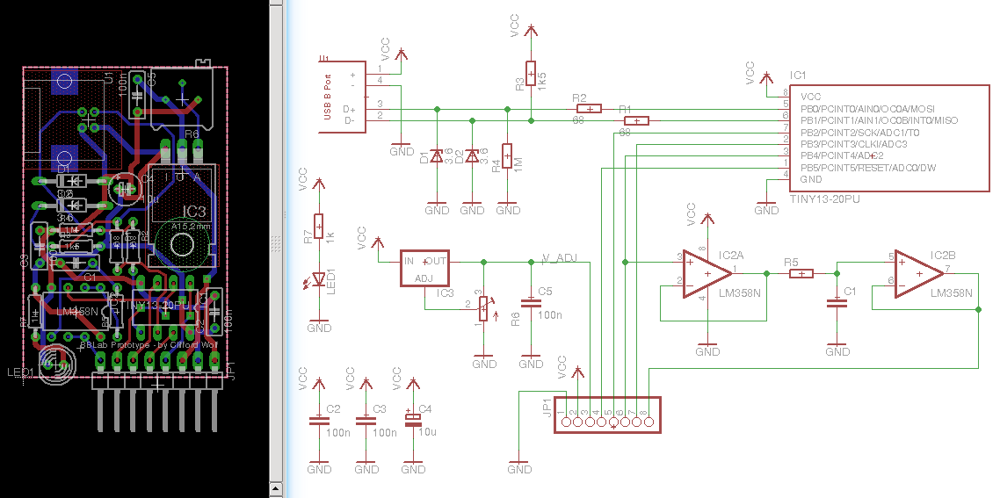
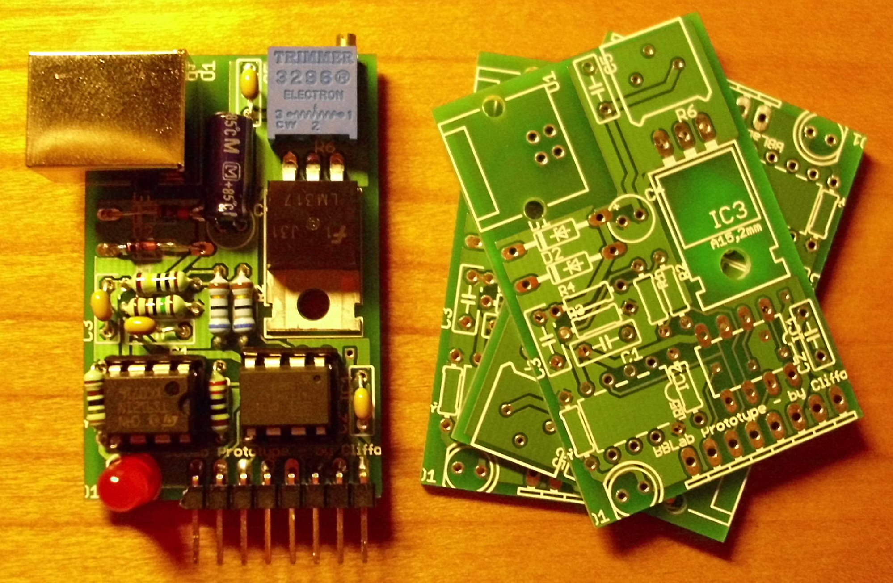
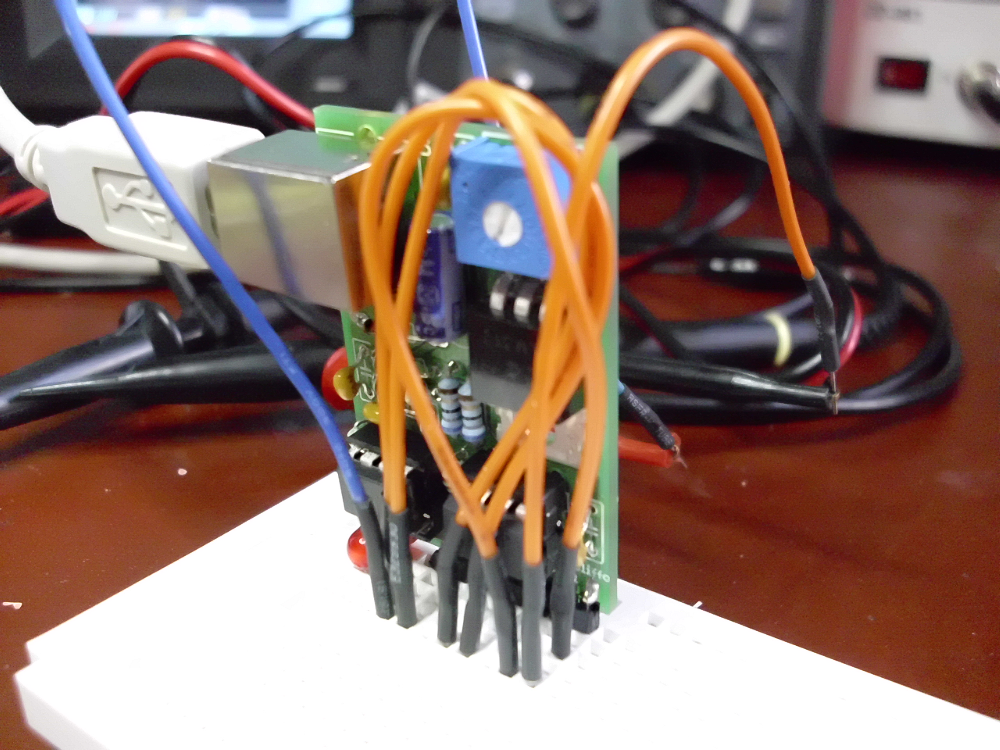
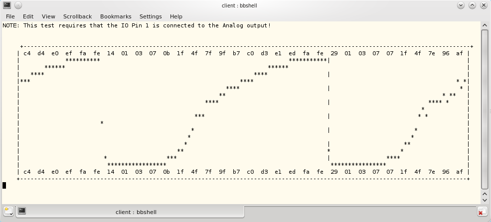
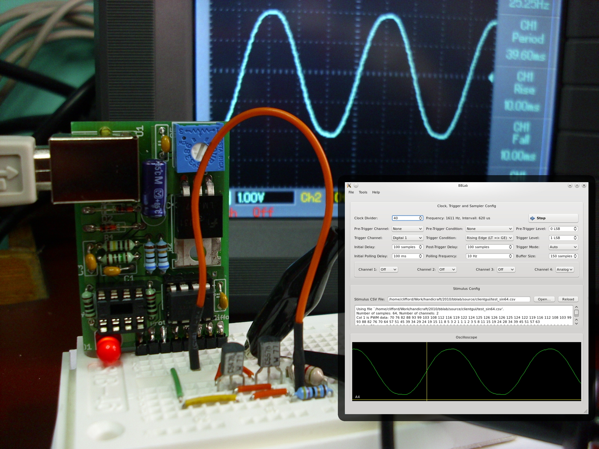
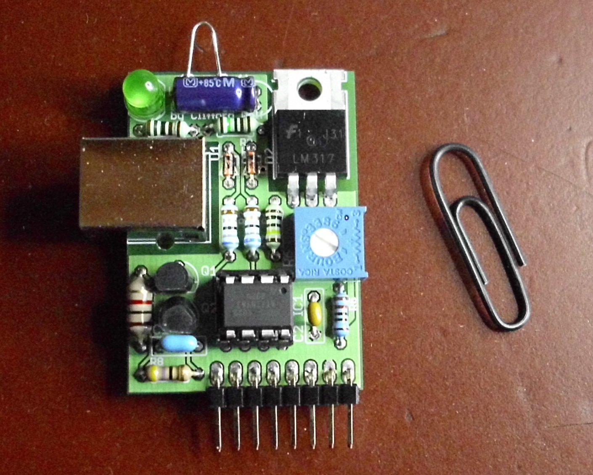

Project History
August 2010
Initial idea: let's build a cheap/minimalistic USB-powered device that can be used as
simple oszi for audio frequencies, signal generator, and power supply for experiments on
breadboards.
Initial schematic and board design
First batch of prototype PCBs
|


|
Decided to go for an Attiny85 based design utilizing V-USB as USB stack. Created
an Arduino-based first prototype platform for playing around with V-USB.
Crafted an initial schematic and board design in eagle. We did not have schematic
symbols for the ATtiny85 and TS912 at hand - so we did go with symbols for pin compatible
parts to save some time.
Evaluated options for USB protocol. Figured out that we must implement it as
HID device in order to support M$ Windows 7. Going to use the V-USB hid-data
example as starting point.
We implemented a hid-based USB protocol for accessing a memory area on the
microcontroller and poll/modify the state of the engine running there
and wrote a simple command line tool to test the communication:
bbshell> rd 0 10
# read addr=0x0, len=0xa
0x00 0x00 0x00 0x00 0x00 0x00 0x00 0x00 0x00 0x00
bbshell> wr 3 1 2 3 4 5
# write addr=0x3, len=0x5
bbshell> rd 0 10
# read addr=0x0, len=0xa
0x00 0x00 0x00 0x01 0x02 0x03 0x04 0x05 0x00 0x00
After that we first build a firmware for the Arduino-based test-platform and then
ported the code to first the BBLab prototype board.
September 2010
The firmware is finished (modulo bugs) and we can make some first real tests.
The first test of the feature-complete firmware on the BBLab prototype
Output produced by the test client for the first test
Testing an alternate PWM filter circuit (with a screenshot of the gui prototype)
2nd Prototype (almost finished - just some layout cleanups left to do)
|


|
The next issues to address are (1) a cleanup and some improvements in the hardware design and (2) the
actual GUI client.